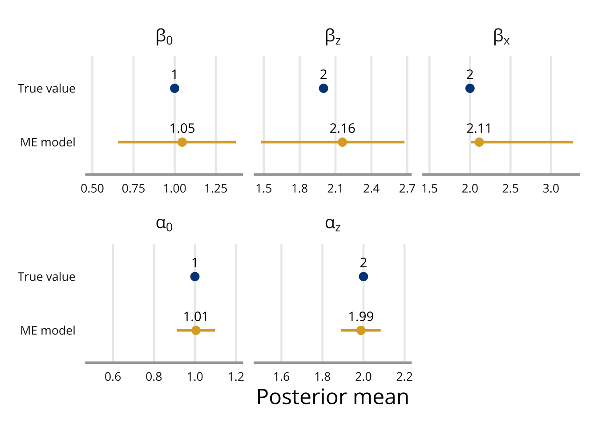

library(INLA)Simulation example
\[ \def\na{\texttt{NA}} \]
We here provide a detailed guide to the data simulation and measurement error model used in the simulation study in the paper. This vignette goes through the model in great detail, but only one data set is generated. In the example Simulation study the simulation is run 100 times to ensure that the result are not just due to random variation.
For this example, we simulate a linear regression model with a mismeasured covariate \(\boldsymbol{x}\), observed as \(\boldsymbol{w}\), as well as a covariate without measurement error, \(\boldsymbol{z}\). The covariate \(\boldsymbol{x}\) is constructed to have both Berkson and classical measurement error, and it is also missing (completely at random) approximately 20% of the observations.
Data generation
The data is generated in the following code.
set.seed(2022)
n <- 1000
# Covariate without error:
z <- rnorm(n, mean = 0, sd = 1)
# Berkson error:
u_b <- rnorm(n, sd = 1)
r <- rnorm(n, mean = 1 + 2*z, sd = 1)
x <- r + u_b
# Response:
y <- 1 + 2*x + 2*z + rnorm(n)
# Classical error:
u_c <- rnorm(n, sd = 1)
w <- r + u_c
# Missingness:
m_pred <- -1.5 - 0.5*z # This gives a mean probability of missing of ca 0.2.
m_prob <- exp(m_pred)/(1 + exp(m_pred))
m_index <- as.logical(rbinom(n, 1, prob = m_prob)) # MAR
# m_index <- sample(1:n, 0.2*n, replace = FALSE) # MCAR
w[m_index] <- NA
simulated_data <- data.frame(y = y, w = w, z = z)The simulated “observed” data then consists of three columns:
\[ \boldsymbol{y} \quad \boldsymbol{w} \quad \boldsymbol{z} \]
For \(n = 1000\) simulated observations, they contain:
- \(y_1, \dots, y_n\): The continuous response.
- \(w_1, \dots, w_n\): A continuous covariate with classical and Berkson measurement error and missing values.
- \(z_1, \dots, z_n\): A continuous covariate without measurement error or missingness.
attach(simulated_data)
n <- nrow(simulated_data)Model
Our response for this model will be
\[ \boldsymbol{y} = \beta_0 + \beta_x \boldsymbol{x} + \beta_z \boldsymbol{z} + \boldsymbol{\varepsilon} \ , \quad \boldsymbol{\varepsilon} \sim N(\boldsymbol{0}, \tau_y\boldsymbol{I}) \ , \] the Berkson error model is \[ \boldsymbol{x} = \boldsymbol{r} + \boldsymbol{u}_b \ , \quad \boldsymbol{u}_b \sim N(\boldsymbol{0}, \tau_{u_b}\boldsymbol{I}) \ , \] the classical error model is \[ \boldsymbol{w} = \boldsymbol{r} + \boldsymbol{u}_c \ , \quad \boldsymbol{u}_c \sim N(\boldsymbol{0}, \tau_{u_c}\boldsymbol{I}) \ , \] and the imputation model is \[ \boldsymbol{r} = \alpha_0 + \alpha_z \boldsymbol{z} + \boldsymbol{\varepsilon}_r \ , \quad \boldsymbol{\varepsilon}_r \sim N(\boldsymbol{0}, \tau_r\boldsymbol{I}) \ . \] Rewritten for INLA these models are \[ \begin{align} \boldsymbol{y} &= \beta_0 + \beta_x \boldsymbol{x} + \beta_z \boldsymbol{z} + \boldsymbol{\varepsilon} \ , \quad &\boldsymbol{\varepsilon} \sim N(\boldsymbol{0}, \tau_y\boldsymbol{I}) \ , \\ \boldsymbol{0} &= -\boldsymbol{x} + \boldsymbol{r} + \boldsymbol{u}_b \ , \quad & \boldsymbol{u}_b \sim N(\boldsymbol{0}, \tau_{u_b}\boldsymbol{I}) \ , \\ \boldsymbol{w} &= \boldsymbol{r} + \boldsymbol{u}_c \ , \quad &\boldsymbol{u}_c \sim N(\boldsymbol{0}, \tau_{u_c}\boldsymbol{I}) \ , \\ \boldsymbol{0} &= -\boldsymbol{r} + \alpha_0 + \alpha_z \boldsymbol{z} + \boldsymbol{\varepsilon}_r \ , \quad &\boldsymbol{\varepsilon}_r \sim N(\boldsymbol{0}, \tau_r\boldsymbol{I}) \ . \end{align} \]
The prior distributions are
- \(\boldsymbol{r} \sim N(\alpha_0 + \alpha_z \boldsymbol{z}, \tau_r \boldsymbol{I})\),
- \(\beta_0, \beta_x, \beta_z \sim N(0, \tau_{\beta})\), with \(\tau_{\beta} = 0.001\),
- \(\alpha_0, \alpha_z \sim N(0, \tau_{\alpha})\), with \(\tau_{\alpha} = 0.0001\)
- \(\tau_{y}, \tau_{u_b}, \tau_{u_c}, \tau_{r} \sim \text{Gamma}(0.5, 0.5)\),
We specify the priors in the code:
# Priors for model of interest coefficients
prior.beta = c(0, 1/1000) # N(0, 10^3)
# Priors for exposure model coefficients
prior.alpha <- c(0, 1/10000) # N(0, 10^4)
# Priors for y, measurement error and true x-value precision
prior.prec.y <- c(0.5, 0.5) # Gamma(0.5, 0.5)
prior.prec.u_b <- c(0.5, 0.5) # Gamma(0.5, 0.5)
prior.prec.u_c <- c(0.5, 0.5) # Gamma(0.5, 0.5)
prior.prec.r <- c(0.5, 0.5) # Gamma(0.5, 0.5)
# Initial values
prec.y <- 1
prec.u_b <- 1
prec.u_c <- 1
prec.r <- 1The hierarchical model described in the above section is fit in INLA as a joint model using the \(\texttt{copy}\) feature. We first specify the models in the following matrices and vectors:
\[ \underbrace{ \begin{bmatrix} y_1 & \na & \na & \na \\ \vdots & \vdots & \vdots & \vdots \\ y_n & \na & \na & \na \\ \na & 0 & \na & \na \\ \vdots & \vdots & \vdots & \vdots \\ \na & 0 & \na & \na \\ \na & \na & w_1 & \na \\ \vdots & \vdots & \vdots & \vdots \\ \na & \na & w_n & \na \\ \na & \na & \na & 0 \\ \vdots & \vdots & \vdots & \vdots \\ \na & \na & \na & 0 \\ \end{bmatrix} }_{\texttt{Y}} = \beta_0 \underbrace{ \begin{bmatrix} 1 \\ \vdots \\ 1 \\ \na \\ \vdots \\ \na \\ \na \\ \vdots \\ \na \\ \na \\ \vdots \\ \na \\ \end{bmatrix} }_{\texttt{beta.0}} + \beta_x \underbrace{ \begin{bmatrix} 1 \\ \vdots \\ n \\ \na \\ \vdots \\ \na \\ \na \\ \vdots \\ \na \\ \na \\ \vdots \\ \na \\ \end{bmatrix} }_{\texttt{beta.x}} + \underbrace{ \begin{bmatrix} \na \\ \vdots \\ \na \\ -1 \\ \vdots \\ -n \\ \na \\ \vdots \\ \na \\ \na \\ \vdots \\ \na \\ \end{bmatrix} }_{\texttt{id.x}} + \underbrace{ \begin{bmatrix} \na \\ \vdots \\ \na \\ 1 \\ \vdots \\ n \\ 1 \\ \vdots \\ n \\ -1 \\ \vdots \\ -n \\ \end{bmatrix} }_{\texttt{id.r}} + \beta_z \underbrace{ \begin{bmatrix} z_1 \\ \vdots \\ z_n \\ \na \\ \vdots \\ \na \\ \na \\ \vdots \\ \na \\ \na \\ \vdots \\ \na \\ \end{bmatrix} }_{\texttt{beta.z}} + \alpha_0 \underbrace{ \begin{bmatrix} \na \\ \vdots \\ \na \\ \na \\ \vdots \\ \na \\ \na \\ \vdots \\ \na \\ 1 \\ \vdots \\ 1 \\ \end{bmatrix} }_{\texttt{alpha.0}} + \alpha_z \underbrace{ \begin{bmatrix} \na \\ \vdots \\ \na \\ \na \\ \vdots \\ \na \\ \na \\ \vdots \\ \na \\ z_1 \\ \vdots \\ z_n \\ \end{bmatrix} }_{\texttt{alpha.z}} \]
We specify these matrices in our code:
Y <- matrix(NA, 4*n, 4)
Y[1:n, 1] <- y # Regression model of interest response
Y[n+(1:n), 2] <- rep(0, n) # Berkson error model response
Y[2*n+(1:n), 3] <- w # Classical error model response
Y[3*n+(1:n), 4] <- rep(0, n) # Imputation model response
beta.0 <- c(rep(1, n), rep(NA, 3*n))
beta.x <- c(1:n, rep(NA, 3*n))
beta.z <- c(z, rep(NA, 3*n))
id.x <- c(rep(NA, n), 1:n, rep(NA, n), rep(NA, n))
weight.x <- c(rep(NA, n), rep(-1, n), rep(NA, n), rep(NA, n))
id.r <- c(rep(NA, n), 1:n, 1:n, 1:n)
weight.r <- c(rep(NA, n), rep(1, n), rep(1, n), rep(-1, n))
alpha.0 = c(rep(NA, 3*n), rep(1, n))
alpha.z = c(rep(NA, 3*n), z)dd <- list(Y = Y,
beta.0 = beta.0,
beta.x = beta.x,
beta.z = beta.z,
id.x = id.x,
weight.x = weight.x,
id.r = id.r,
weight.r = weight.r,
alpha.0 = alpha.0,
alpha.z = alpha.z)Next, we set up the INLA formula. There are four fixed effects (\(\beta_0\), \(\beta_z\), \(\alpha_0\), \(\alpha_z\)) and three random effects. Two of the random effects are necessary to ensure that the values of \(\boldsymbol{r}\) are the same in the exposure model and error model are assigned the same values as in the regression model, where \(\beta_x \boldsymbol{r}\) is the product of two unknown quantities. The third random effect term is for encoding the Berkson error model.
f(beta.x, copy="id.x", ...): Thecopy="id.x"argument ensures that identical values are assigned to \(\boldsymbol{x}\) in all components of the joint model. \(\beta_x\), which is treated as a hyperparameter, is the scaling parameter of the copied process \(\boldsymbol{x}^*\).f(id.x, weight.x, ...):id.xcontains the \(\boldsymbol{x}\)-values, encoded as an i.i.d. Gaussian random effect, and weighted withweight.xto ensure the correct signs in the joint model. Thevaluesoption contains the vector of all values assumes by the covariate for which the effect is estimated. The precisionprecof the random effect is fixed at \(\exp(-15)\), which is necessary since the uncertainty in \(\boldsymbol{x}\) is already modeled in the second level (column 2 ofY) of the joint model, which defines the imputation component.f(id.r, weight.r, ...): in the same way thatid.x, contains the \(\boldsymbol{x}\)-values,id.rcontains the \(\boldsymbol{r}\)-values.
formula = Y ~ - 1 + beta.0 + beta.z +
f(beta.x, copy = "id.x",
hyper = list(beta = list(param = prior.beta, fixed = FALSE))) +
f(id.x, weight.x, model = "iid", values = 1:n,
hyper = list(prec = list(initial = -15, fixed = TRUE))) +
f(id.r, weight.r, model="iid", values = 1:n,
hyper = list(prec = list(initial = -15, fixed = TRUE))) +
alpha.0 + alpha.zWe explicitly remove the intercept using -1 since there is no common intercept in the joint model, and the model specific intercepts \(\beta_0\) and \(\alpha_0\) are specified instead.
Next comes the call of the inla function. We explain further some of the terms:
family: Here we need to specify one likelihood function for each of the model levels corresponding to each column in the matrixY. In this case, they are all Gaussian, but if we for instance had a logistic regression model as our model of interest, then the list would bec("binomial", "gaussian", "gaussian", "gaussian").control.family: Here we specify the hyperparameters for each of the three likelihoods. In this case, we specify the precision for each Gaussian likelihood, \(\tau_y\), \(\tau_{u_b}\), \(\tau_{u_c}\) and \(\tau_{r}\), respectively.control.predictor: Computes the predictive distribution of the missing observations in the response (TODO: does this mean w in this case? Since w is the response for one of the models?)control.fixed: Prior specification for the fixed effects.
model_sim <- inla(formula, data = dd, scale = scale.vec,
family = c("gaussian", "gaussian", "gaussian", "gaussian"),
control.family = list(
list(hyper = list(prec = list(initial = log(prec.y),
param = prior.prec.y,
fixed = FALSE))),
list(hyper = list(prec = list(initial = log(prec.u_b),
param = prior.prec.u_b,
fixed = FALSE))),
list(hyper = list(prec = list(initial = log(prec.u_c),
param = prior.prec.u_c,
fixed = FALSE))),
list(hyper = list(prec = list(initial = log(prec.r),
param = prior.prec.r,
fixed = FALSE)))
),
control.predictor = list(compute = TRUE),
control.fixed = list(
mean = list(beta.0 = prior.beta[1],
beta.z = prior.beta[1],
alpha.0 = prior.alpha[1],
alpha.z = prior.alpha[1]),
prec = list(beta.0 = prior.beta[2],
beta.z = prior.beta[2],
alpha.0 = prior.alpha[2],
alpha.z = prior.alpha[2]))
)Results
# Summary of fixed effects:
fixed <- model_sim$summary.fixed[1:5]
fixed[c("mean", "0.025quant", "0.975quant")] mean 0.025quant 0.975quant
beta.0 1.045890 0.6562144 1.372191
beta.z 2.157892 1.4764692 2.676830
alpha.0 1.005302 0.9123583 1.098251
alpha.z 1.987672 1.8916031 2.083756# Summary of random effects:
hyper <- model_sim$summary.hyperpar[1:5]
hyper[c("mean", "0.025quant", "0.975quant")] mean 0.025quant 0.975quant
Precision for the Gaussian observations 0.6573104 0.4748465 0.6681521
Precision for the Gaussian observations[2] 1.4160039 1.1534509 11.2367339
Precision for the Gaussian observations[3] 1.0216925 0.9021679 1.0810789
Precision for the Gaussian observations[4] 1.0364528 0.9792048 1.9582454
Beta for beta.x 2.1149641 2.0095097 3.2729965The fixed effects can then be accessed through model$summary.fixed, whereas the posterior mean and sd for the coefficient of \(\boldsymbol{x}\) can be accessed through model$summary.hyperpar, since \(\beta_x\) is actually a hyperparameter of the model. In model$summary.hyperpar we also get the precision terms for each of the sub-models in the order they have been defined, so the first precision is \(\tau_y\), the second one \(\tau_{u_b}\), the third one \(\tau_{u_c}\) and the final one is \(\tau_r\).
